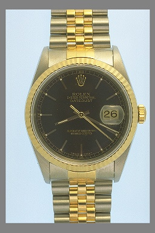

|
deconstruction you punched my clock with such precision I couldn't help but notice the time. I want every word to resonate to punctuate my breath my pulse. I want every sound that trickles from your lips to echo in the back of my throat. I want the perfect poem. I want you. Paul David Mena 26 January, 1997 Cambridge, MA |
 |
back
to Paul's Poetry Page